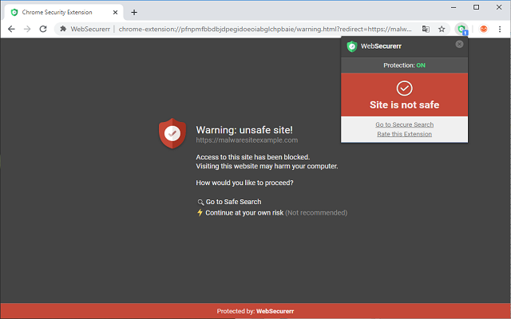

Welcome to WebSecurerr Browser Protection
Thank you for choosing WebSecurerr. Click 'Install' button to proceed to Chrome Store and Add WebSecurerr extension to your browser. Websecurerr extension's functionality will prompt you before you visit dangerous sites and change browser's default search to SearchSecurer.com
